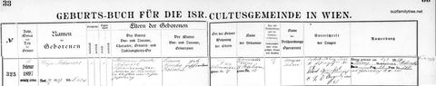

Hugo Schwarz
1897–1897
Life events
| Born | |
|---|---|
| Died | 20 Apr 1897 · Link |
| Lived | 24 Jul 1898 · 1200 Bäuerlegasse 19, Vienna, Austria Map · per Richard's birth |
Family

Photos
Moses Moritz Schwarz
Hugo Schwarz
After doing genealogy for 30+ years, it has become my life’s work.
Contact me via the link below with questions or information to share.
... Suzanne

1897–1897
| Born | |
|---|---|
| Died | 20 Apr 1897 · Link |
| Lived | 24 Jul 1898 · 1200 Bäuerlegasse 19, Vienna, Austria Map · per Richard's birth |